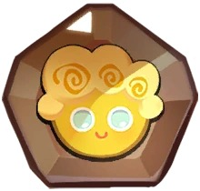
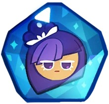
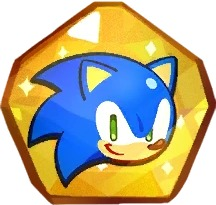
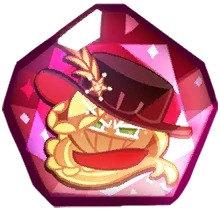
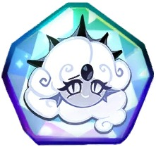
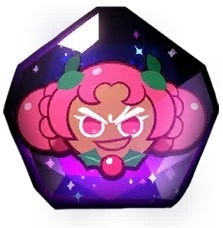
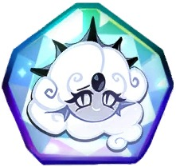
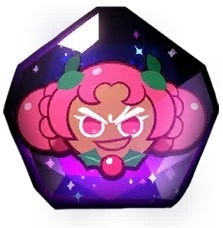

Home
Event
About Cookies
Cookies
Cookie Level
- "Common" is the lowest grade when compared to other grades. It has the lowest HP or attack power, but have the highest probability of being obtained from the Gacha.
- "Rare" is a Cookie that has improved stats in various aspects such as more HP or increased ATK.
- "Epic" Cookies are rarer compared to Common and Rare Cookies, but they have higher stats and more complex skills.
- "Super Epic" Cookies are cookies that have a slightly higher rarity than Epic Cookies.
- "Legendary" is a Cookie based on the game Cookie Run: OvenBreak which has skills stronger then those of Epic Cookies, and have a very low drop rate.
- "Ancient" is a type of Cookie with skills comparable to Legendary Cookies, but are used to describe the 5 Ancient Cookies in the story.
- "Special" is a Cookie that comes from a special event. It can only be found at the specified time, but skills and stats are numerically equivalent to Epic Cookies. The current cookies present in that category are Sonic Cookie & Tails Cookie in celebration of the former's 30th anniversary.(now you can't get those two cookie because that event is finish)
- "Guest" is a type of Cookie that exists as decoration. It can be placed in the Kingdom and can interact with decor, but it cannot be leveled up or used in combat. These were introduced in the Disney Crossover update.(also you can't get those cookie too)
 
Those are level of cookie soul stones(Guest cookie can't use in battle that why we don't has soul stone)

Those are level of cookie soul stones(Guest cookie can't use in battle that why we don't has soul stone)
Cookie Type
- Ambush Cookies have skills that target a specific enemy or row of enemies and dodge any attacks at the same time.
- Charge Cookies primarily deal damage to enemies directly in front of them.
- Defense Cookies sacrifice high damage rates in favor of giving buffs to other Cookies and having a strong Health and Defense stat.
- Magic Cookies have skills that give enemies temporary debuffs that make them weaker.
- Bomber Cookies can deal with crowds by having attacks and skills that hit multiple enemies at once.
- Ranged Cookies deal high damage to enemies, but are usually positioned in the back as to prevent them from taking more damage.
- Healing Cookies have skills that heal most or all of the cookies that are in the field. The strength of healing depends on the Cookie's attack power.
- Support Cookies provide a mix of damage, healing, and inflicting buffs and debuffs to allies and enemies. Support Cookies are best used to boost the power of a certain team.
If you wanna know more about cookies click the "Cookies"
Cookies